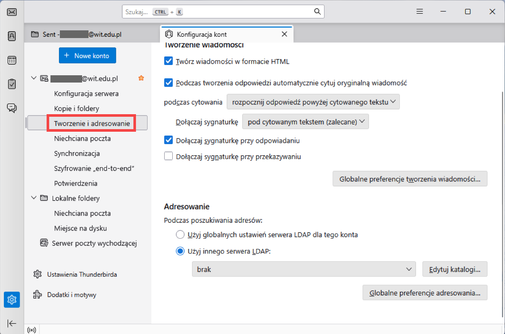
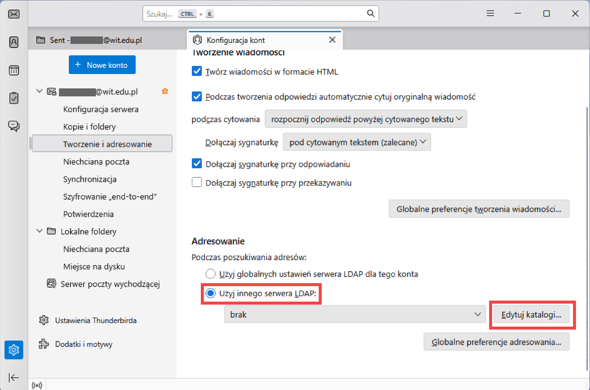
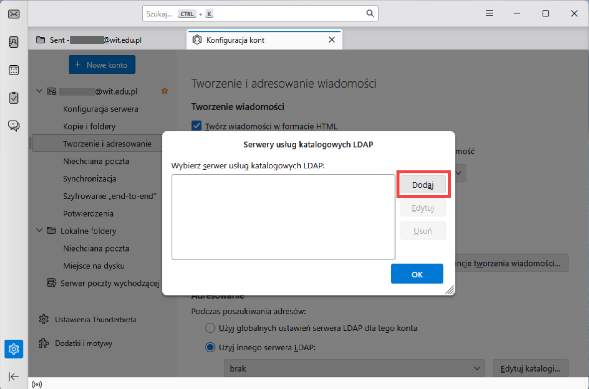
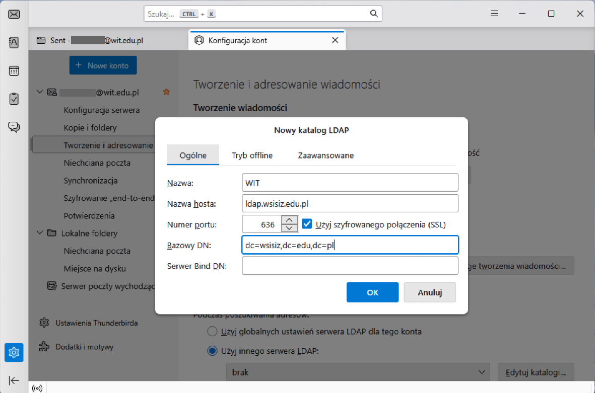
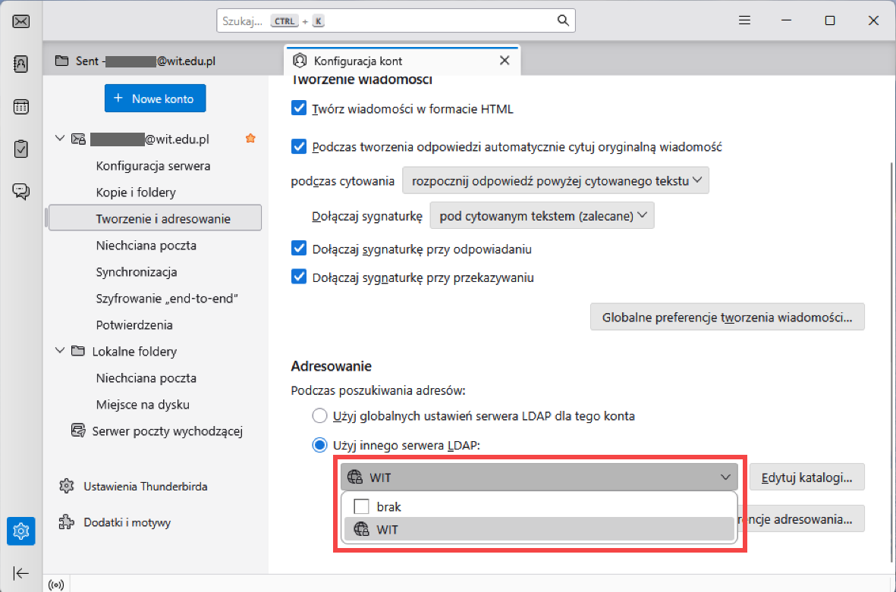
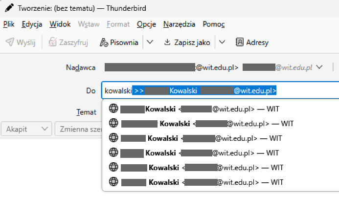

Usługa LDAP pozwala wyszukiwać adresy e-mail użytkowników w sieci WIT podczas adresowania wiadomości.
-
Kliknij prawym przyciskiem myszy na swoje konto i wybierz Ustawienia

- Wybierz Tworzenie i adresowanie

-
Zjedź do sekcji Adresowanie i zaznacz Użyj innego serwera LDAP
Następnie kliknij Edytuj katalogi...

-
Otworzy się okno z listą dostępnych usług LDAP. Kliknij Dodaj

-
Podaj:
-
Nazwa: WIT
-
Nazwa hosta:
ldap.wsisiz.edu.pl
-
Numer portu: 636 (zaznacz opcję Użyj szyfrowanego połączenia
(SSL))
-
Bazowy DN:
dc=wsisiz,dc=edu,dc=pl
-
Server Bind DN - pozostaw pusty
Kliknij OK dwa razy

-
Z rozwijanej listy wybierz WIT

-
Gotowe. Teraz podczas adresowania wiadomości, możesz odnaleźć adres użytkownika wg Imienia/Nazwiska
